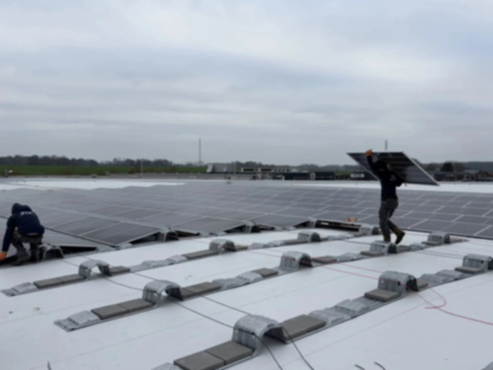
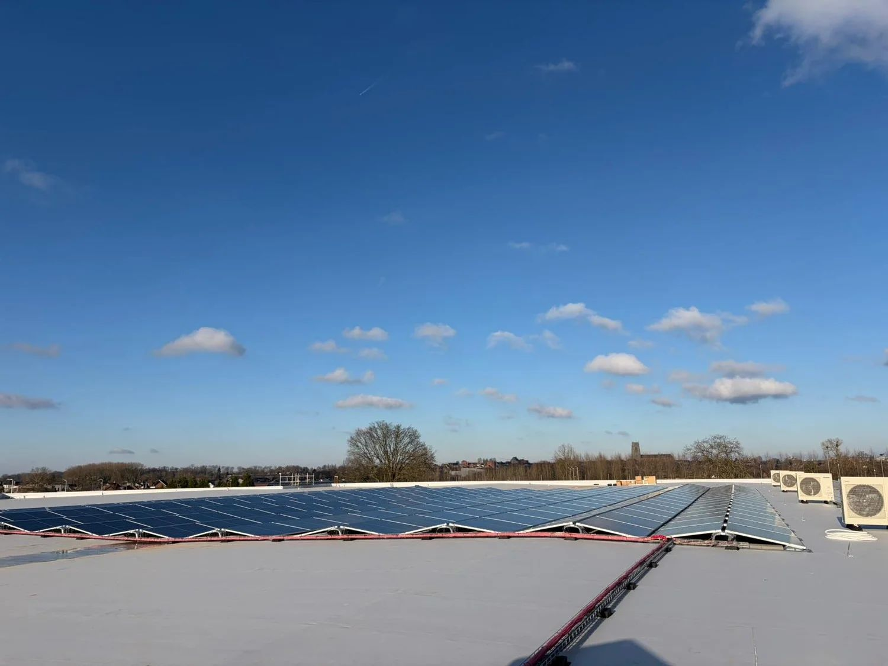

Zakelijke elektrotechniek & energie.
JTS Installatietechniek ondersteunt bedrijven bij elektrotechnische installaties en duurzame energieoplossingen. Van elektra en meterkasten tot zonnepanelen, batterijopslag en laadinfrastructuur. Altijd veilig, met oog voor toekomstige uitbreiding.

Concreet, nuchter en klaar voor groei.
- Elektra & verdelers/meterkastenUitbreiden, aanpassen, netjes en veilig opbouwen, klaar voor groei.
- Zonnepanelen op bedrijfspandenOntwerp en plaatsing met focus op veiligheid, monitoring en onderhoud.
- Batterijopslag & energiesturing (EMS)Interessant bij terugkerende pieken of beter benutten van eigen opwek — alleen als het technisch én financieel klopt.
- Laadinfrastructuur (AC en waar passend DC)Schaalbaar laadplein, load balancing, voorbereiding op uitbreiding.
- Onderhoud & serviceContinuïteit, overzicht en snelle opvolging bij issues.

Plan een kennismakingBesparen op pieken en ruimte maken voor groei.
Bij veel bedrijven zit de pijn niet in het jaarverbruik, maar in korte pieken: alles tegelijk aan en je installatie “zit vol”. Dat merk je aan beperkingen, zoals geen extra machines, koeling, keuken of laders, of gedoe in de verdeler. Bij grootzakelijk kan het bovendien doorwerken in netwerkkosten.
Wat bedoelen we met piek?
Piek (kW) is het hoogste moment dat je tegelijk afneemt; vaak zie je dit terug in kwartierwaarden. Peak shaving is die piek lager maken door slimmer te schakelen (eerste stap) en soms met een batterij die tijdelijk bijspringt (alleen als het klopt).
Alles start tegelijk
’s Ochtends of rond de lunch gaat alles aan: machines, koeling, keuken, compressor. De piek wordt dan bepaald door timing, niet door je echte behoefte. Startmomenten spreiden, prioriteiten instellen en de verdeling in de meterkast netjes maken geeft rust én voorkomt dat je te snel aan verzwaring denkt.
Laden zonder sturing
Zakelijk laden werkt prima — als je het slim verdeelt. Zonder load balancing trekken laadmomenten je piek onnodig omhoog. Wij ontwerpen een laadplein schaalbaar, van enkele laadpalen tot grotere installaties, met sturing zodat je installatie niet “op slot” gaat.
Netcapaciteit is de rem
Meer machines, extra koeling, warmtepompen of een DC-lader: het kan vaak wél, maar niet zomaar “erbij”. Met fasebalans, reserves, logische groepen, kabeltrajecten en slimme sturing maken we je installatie groei-proof: meer bruikbare capaciteit op het juiste moment.
Wat levert dit op in euro’s? Bij sommige grootzakelijke tariefstructuren tellen pieken mee in de netwerkkosten. 30 kW structureel lager kan, afhankelijk van de tariefcategorie, grofweg ±€200 per maand schelen aan netbeheer-transportcomponenten. Wij beloven dit nooit zomaar: we bepalen het op basis van jouw meetdata en tariefindeling.
Laat het doorrekenenSamen verduurzamen.
We zijn actief op zoek naar aannemers, vastgoedpartijen en ontwikkelaars om langdurig mee samen te werken aan elektrische renovaties en verduurzamingsprojecten: meterkasten en verdeelinrichtingen, voorbereiding op elektrificatie, laadinfrastructuur, PV en waar passend energieopslag.
Wij houden het nuchter: duidelijke afspraken, strakke uitvoering en een planning waar je op kunt bouwen. Bij grote projecten werken we samen met East Connect, met ruim 25 jaar ervaring in installatietechniek en energiemanagement; de uitvoering ligt bij JTS.
Interesse om samen te werken? Plan een kennismaking.
Neem contact opVeelgestelde vragen, kort en eerlijk
Staat uw vraag er niet tussen? Bel 030 781 6767 of stuur een WhatsApp-bericht.
Moet ik altijd verzwaren als ik uitbreid?
Niet altijd. Vaak kun je eerst winst pakken met verdeling, fasebalans en slimme sturing. Verzwaren is soms nodig, maar niet de eerste stap.
Is een batterij altijd rendabel?
Nee. Soms wel, soms niet. Als pieken kort en regelmatig zijn, of als je veel eigen opwek beter wil benutten, kan het interessant worden. We rekenen het door.
Kunnen we meer laadpalen plaatsen op de bestaande aansluiting?
Vaak wel, mits je het slim ontwerpt. Load balancing en een goede verdeleropbouw zijn het verschil tussen “gedoe” en “werkt gewoon”.
Wat is de eerste stap?
We starten met inzicht: meetdata en kwartierwaarden, piekmomenten, de grootste verbruikers en je uitbreidingsplannen. Daarna krijg je een plan dat technisch klopt én uitvoerbaar is.